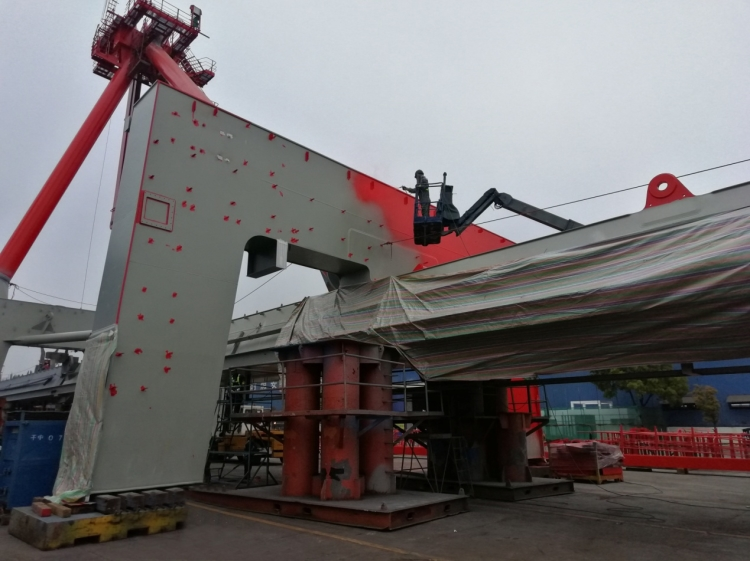
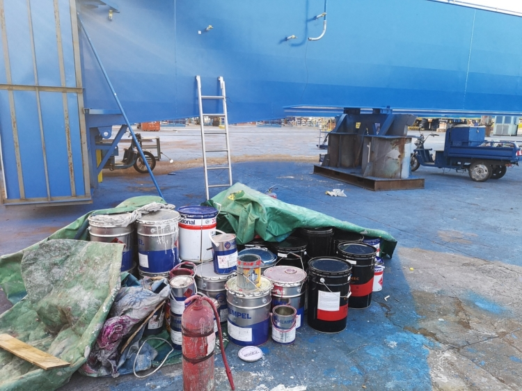

上海振华集团环境违法问题突出 群众反映强烈
2016年第一轮中央环境保护督察期间，上海振华重工(集团)股份有限公司（以下简称“振华集团”）长兴基地因环境污染问题被群众举报。2019年7月第二轮中央生态环境保护督察进驻上海伊始，又频繁收到关于该企业环境污染问题的投诉。督察组立即组织现场调查，发现振华集团作为中央企业，环保意识十分淡薄，环境违法问题突出，社会责任长期落实不到位；当地以罚代管，企业肆意排污问题始终没有得到解决。
一、基本情况
振华集团隶属于中国交通建设集团有限公司，长兴基地是振华集团最大的生产基地，位于上海市崇明区长兴岛西南侧，占地约5000亩，主要从事各类港口机械和钢结构生产。该公司生产废水收集后排入长兴岛污水处理厂处理。
第一轮中央环保督察期间，督察组按有关规定将群众举报的多项涉及振华集团长兴基地的环境问题转交地方查处。上海崇明区反馈称：对该企业废水超标排放、私设暗管及利用雨水口排放污水等环境违法行为进行立案查处并责令改正；同时，振华集团已制定VOCs治理计划，试点车间VOCs整治计划于2016年底完成，总体治理项目正在推进实施。但本次督察发现，振华集团长兴基地环境污染问题根本没有有效整改，环境违法问题仍然突出。
二、主要问题
（一）环境问题突出，违法行为频发
第一轮中央环保督察以来，振华集团长兴基地共被上海市、崇明区两级生态环境部门立案处罚14次，责令改正1次，其中因露天喷漆被罚6次，因危险废物管理问题被罚4次，因偷排废气被罚2次，因未批先建被罚1次，通过雨水排口偷排污水被罚1次，因无组织排放责令改正1次。这些环境违法行为既有建设项目未批先建等手续问题，又有环保设施不正常运行、废气无组织排放等管理问题，还有擅自偷排废气、超标排污，甚至同类违法行为屡次发生等问题。

图1 露天喷漆现场
其中，群众反映最强烈的是该基地大气污染问题。该基地60%左右的喷漆是露天作业，每年露天喷漆使用240万升左右的油漆和60万升左右的稀释剂，这些露天喷漆工序没有任何污染防治设施，对周边环境和群众生产生活造成危害。督察组现场检查还发现，该基地仅有30台焊接废气收集设备，只能收集处理全基地3%的焊接废气；现场检查时，这些仅有的焊接废气收集设备闲置一旁，没有正常使用。
图2 现场堆砌的油漆桶
.（二）漠视群众利益，厂群矛盾突出
振华集团长兴基地厂区周边300米内居住着197户居民，距厂界最近的仅隔一条小河。据崇明区信访办等部门提供的材料，因为地域位置相邻，该基地镀锌车间废气排放使得附近村民家中桌椅和屋外车辆上常有难以清洗的粉尘，喷砂车间的铁珠曾数次将居民家中玻璃砸坏，导致附近居民多次报警，严重影响周边环境。
督察组调阅近年来群众信访投诉资料发现，2017年以来，振华集团长兴基地与周边群众矛盾不断加剧。据不完全统计，两年来，周边群众对该基地环境问题投诉83次，涉及项目审批和水、气、危险废物、噪声、光等方面环境污染问题，这些投诉问题都是生态环境部门已查处并反复要求企业整改的环境违法行为。但是振华集团社会责任缺失，不仅不从自身找原因，不积极整改环境问题，反而振振有词，甚至指责一些投诉是恶意举报和无理指控。
（三）法律意识淡薄，态度傲慢
因群众反应强烈，厂群矛盾不断加剧。2019年5月，崇明区信访部门向区委区政府主要领导报送了《振华集团长兴基地环境污染信访问题的情况专报》。崇明区委主要领导通过上海市长兴岛开发办将《情况专报》转交振华集团主要负责人。
针对《情况专报》，振华集团向上海市长兴岛开发办出具公文回函。在回函中，振华集团对崇明区信访部门没有事先告知，就出具内部《情况专报》大为不满。认为区生态环境部门为应付中央生态环保督察，对企业检查频次过多，查到环境违法问题就处罚，是搞“一刀切”。将生态环境部门的合法履职行为，指责为事先没有和企业沟通的“擅自”处罚，是“官僚主义作风和本位主义问题”。
督察发现，早在2002年原上海市环保局批复的环评中，就对长兴基地拼装场地初期雨水收集和喷漆工艺大气污染防治提出了明确要求，但振华集团一直没有落实到位。17年后还在回函中认为生态环境部门提出的整改要求，是不切实际、不能完成的任务。
三、原因分析
振华集团作为中央企业，政治站位不高，没有认真贯彻落实习近平生态文明思想，环境保护法律意识淡薄，对地方生态环境部门正常监管不配合；社会责任缺失，对周边群众的正常诉求漠不关心，长期以来忽视环境保护；生态环境保护主体责任长期落实不到位，只强调客观原因、历史原因，缺乏从主观、从自身找问题、抓整改，绿色发展在该企业仅是一句空洞的口号。
针对督察发现的问题，督察组要求上海市有关区县和部门要敢于动真碰硬，依法履行法定职责，依法严肃查处振华集团长兴基地各类环境违法问题，敦促企业加快整改进度，切实回应人民群众关切，有效增强人民群众生态环境获得感、幸福感和安全感。同时，督察组要求上海市有关区县和部门要坚决落实辖区生态环境保护监管责任，不管是什么企业都要依法监管，严格执法，保障中央生态环境保护决策部署和国家生态环境保护法规政策贯彻落实到位。
本文信息来源国家生态环境部
相关主题：
原文编辑: EHS资讯
原文链接: https://ehsinfo.cn/2019/08/13/上海振华集团环境违法问题突出.html
版权声明: 转载请注明出处(必须保留作者署名及链接)